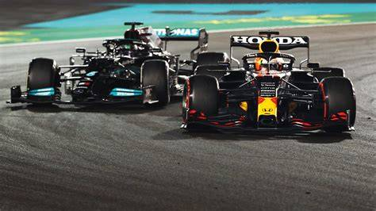
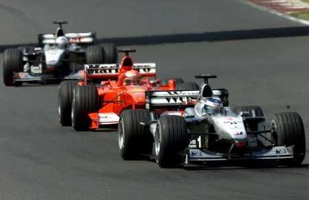
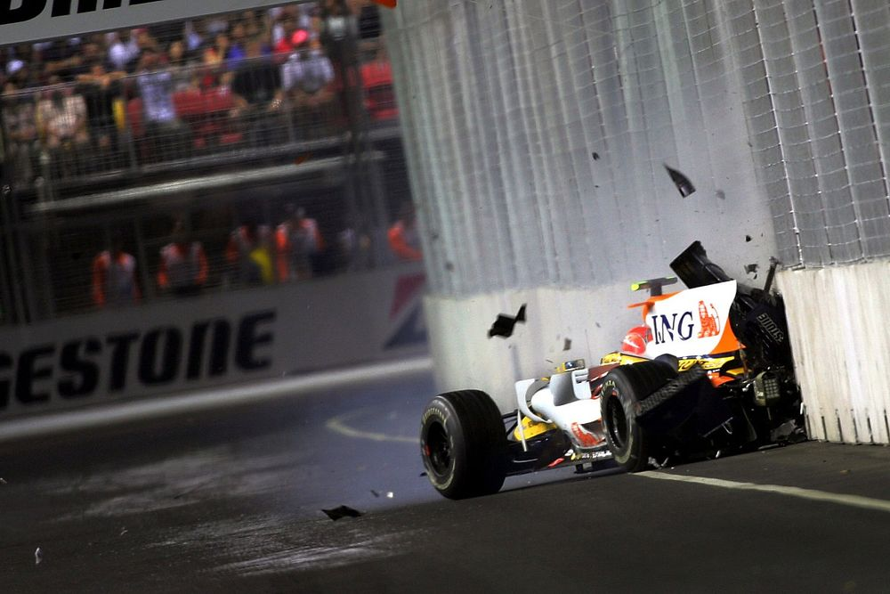

F1 Racers
the pinnacle of motorsport racing
This website will provide information on the best racers, scores, controversies and standings of F1.
This website will provide information on the best racers, scores, controversies and standings of F1.

Lewis HameltonSir Lewis Carl Davidson Hamilton is a British racing driver who competes in Formula One for Ferrari. Hamilton has won a joint-record seven Formula One World Drivers' Championship titles—tied with Michael Schumacher—and holds the records for most wins, pole positions, and podium finishes, among others. (my favorite driver) |

Max VerstappenMax Emilian Verstappen is a Dutch and Belgian racing driver who competes under the Dutch flag in Formula One for Red Bull Racing. Verstappen has won four Formula One World Drivers' Championship titles, which he won consecutively from 2021 to 2024 with Red Bull, and has won 66 Grands Prix across 11 seasons. |

Oscar PiastriOscar Jack Piastri is an Australian racing driver who competes in Formula One for McLaren. Piastri has won nine Formula One Grands Prix across three seasons. |

Lando NorrisLando Norris is a British racing driver who competes in Formula One for McLaren. Norris was runner-up in the Formula One World Drivers' Championship in 2024 with McLaren, and has won nine Grands Prix across seven seasons. |

Pirre GaslyPierre Jean-Jacques Gasly is a French racing driver who competes in Formula One for Alpine. Gasly won the 2020 Italian Grand Prix with AlphaTauri. (He is also my 2nd favorate driver) |

Fernando AlonsoFernando Alonso Díaz is a Spanish racing driver who competes in Formula One for Aston Martin. Alonso has won two Formula One World Drivers' Championship titles, and is widely regarded as one of the greatest Formula One drivers in the history of the sport. |
These are some of the controversies that have happened in F1,
Click the title to find the wiki on scandal

title2021 Abu Dhabi Grand Prix ControversyThe 2021 Abu Dhabi Grand Prix (officially known as the Formula 1 Etihad Airways Abu Dhabi Grand Prix 2021) was a Formula One motor race held on 12 December 2021 at the Yas Marina Circuit in Abu Dhabi, United Arab Emirates. Contested over a distance of 58 laps, the race was the twenty-second and final round of the 2021 Formula One World Championship. The race decided both the Drivers' and Constructors' championships; Max Verstappen and Lewis Hamilton both had 369.5 points coming into the race. |

Spygate (2007 – McLaren)The 2007 Formula One espionage controversy, also known as Spygate and Stepneygate, was a set of accusations among Formula One racing teams that confidential technical information had been passed between them. It involved the McLaren, Ferrari and Renault F1 teams. |

Crashgate (2008 – Renault)he Renault Formula One crash controversy, dubbed as "Crashgate" by some in the media,[1][2] was a sporting scandal caused when Renault F1 driver Nelson Piquet Jr. deliberately crashed during the 2008 Singapore Grand Prix to give a sporting advantage to his Renault teammate, Fernando Alonso.[3] |
These are the scores of the current 2025 season